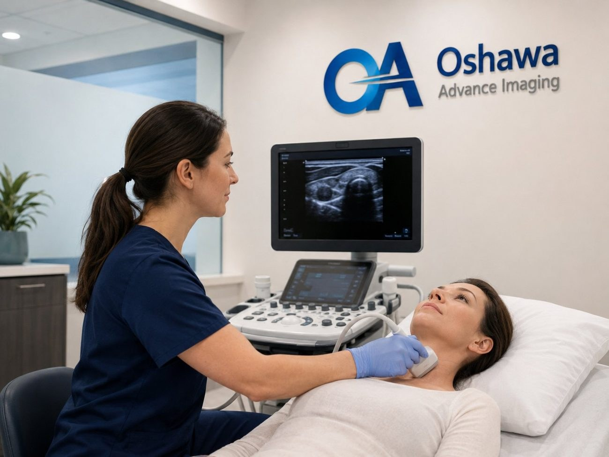

The short version
- Breast ultrasound uses sound waves, not radiation, to take a close look at a specific area of the breast.
- It is most often ordered to check a lump or a focal area of pain, to follow up a finding on a mammogram, or as an added look for people with dense breast tissue.
- Ultrasound works alongside mammography. It does not replace the screening mammogram, which remains the main breast cancer screening test in Ontario.
- In Ontario, people aged 40 to 74 can book their own screening mammogram through the Ontario Breast Screening Program, and results letters include your breast density category.
- A breast ultrasound needs a requisition from your physician, nurse practitioner or midwife. The report goes to them, and they review it with you.
October is Breast Cancer Awareness Month, and it is a good time to understand the tools behind breast health. Mammography gets most of the attention, and for good reason. Ultrasound is the quieter partner that answers many of the questions a mammogram, or your own hand, raises.
We perform breast ultrasound every week at our clinic in downtown Oshawa. This guide explains what the exam is, why your provider might order one, how it fits with Ontario's screening program and the breast density information now included in results letters, and what happens on the day.
What breast ultrasound is
A breast ultrasound uses a small handheld probe and high frequency sound waves to create real time images of the tissue under the skin. It involves no radiation and no compression, so it is safe during pregnancy and breastfeeding and can be repeated as often as needed.
Its particular strength is telling the difference between a fluid filled cyst and a solid area. Cysts are very common, especially between the ages of 35 and 50, and are almost always harmless. Ultrasound can usually identify a simple cyst with confidence in a few minutes. For a solid area, ultrasound shows its size, shape, edges and blood flow, which helps the reporting physician decide whether it looks benign or needs a closer look.
Unlike a screening mammogram, which images both breasts in full, a diagnostic breast ultrasound is targeted. The sonographer focuses on the area your provider has asked about, and often on the nearby lymph nodes under the arm.
Why your provider might order one
- A lump or thickening that you or your provider can feel.
- Pain in one specific spot that does not come and go with your cycle.
- A finding on a mammogram that needs a second look, such as a new density or an area that is hard to interpret.
- Dense breast tissue, where ultrasound can add information a mammogram may miss. More on this below.
- A breast concern in someone under 30, pregnant or breastfeeding, where ultrasound is usually the first test.
- Follow up of a known cyst or a benign appearing area, to confirm it is stable over time.
- Breast concerns in men, such as a lump or swelling behind the nipple.
Being sent for an ultrasound does not mean your provider suspects cancer. Most breast lumps and areas of concern turn out to be benign, such as cysts, fibroadenomas or normal glandular tissue. The ultrasound is how you find that out.
Ultrasound and mammography work together
Screening mammography is still the cornerstone of breast cancer screening in Ontario. It can pick up very early changes, including tiny calcium deposits, that ultrasound does not show well. Ultrasound, in turn, sees through dense tissue more clearly and characterizes lumps in detail. Each fills gaps in the other.
Since October 2024, people aged 40 to 74 in Ontario can book their own screening mammogram through the Ontario Breast Screening Program, without a referral, generally every two years. People 50 and older receive reminder letters, and some people, including those with a strong family history, are recalled every year. Oshawa Advance Imaging does not perform mammography, so if you are due for a screening mammogram, your provider or the Ontario Breast Screening Program can direct you to a site near you. If that mammogram leads to a request for an ultrasound, we can see you.
Do not wait for a screening appointment if something has changed. A new lump, skin dimpling or puckering, a nipple that has turned inward, nipple discharge (especially if bloody), redness or swelling, or pain in one spot that lasts beyond your next cycle should be checked by your provider promptly, at any age.
Dense breasts: what your results letter means
Breasts are made of fatty tissue and dense tissue (glands and connective tissue). On a mammogram, fatty tissue looks dark and dense tissue looks white. Unfortunately, many cancers also look white, which makes them harder to spot in dense breasts. Dense tissue is common and normal, and is especially common in younger women, but it is also linked to a modestly higher risk of breast cancer.
Ontario now includes your density category in your mammogram results. There are four categories:
Scroll sideways to see the full table.
| Category | What it means | Worth discussing with your provider |
|---|---|---|
| A | Almost entirely fatty | Routine screening |
| B | Scattered areas of dense tissue | Routine screening |
| C | Heterogeneously dense | Whether additional imaging such as ultrasound suits you, given your history |
| D | Extremely dense | Yearly mammograms and supplemental screening, such as ultrasound |
Ontario Health has recommended supplemental screening for people with extremely dense breasts (Category D), and providers can order a breast ultrasound in addition to mammography when they feel it is appropriate. If your letter says C or D, bring it to your next appointment and ask what it means for you. If your provider orders an ultrasound, we can book you.
What happens at your appointment
- Before you come
Bring your health card and requisition. If you have had a mammogram or breast imaging elsewhere, tell us where and when, so the reporting physician can compare. No other preparation is needed. Wear a two piece outfit so you only need to undress from the waist up.
- Getting ready
You change into a gown in private and lie on your back on the exam bed, usually with the arm on the side being examined raised above your head. You are welcome to request a chaperone or bring a support person.
- The scan
The sonographer applies warm gel and moves the probe gently over the area of concern, and sometimes the armpit. It is painless, though light pressure may be uncomfortable over a tender spot. Let us know if anything hurts.
- Finishing up
Most breast ultrasounds take about 15 to 30 minutes. You can wipe off the gel, dress and go straight back to your day.
Results and next steps
A qualified physician interprets your images and sends a written report to the provider who ordered the exam. Our sonographers do not discuss findings during the scan, because results need to be explained in the context of your full history. Book a follow up with your provider to go over the report.
Most reports confirm something benign, or recommend routine follow up. Sometimes the report suggests a short interval recheck in a few months to confirm an area is stable, or further tests such as a diagnostic mammogram or a biopsy, which are arranged by your provider. If you have questions about the process while you wait, call us.
Booking a breast ultrasound in Oshawa
Breast ultrasound at our clinic is covered by OHIP with a valid health card and a requisition from your physician, nurse practitioner or midwife. Your provider can fax the requisition to us at +1 (289) 731-2606, or give it to you to bring. Then call us at +1 (289) 481-0263 or request an appointment online, and we will find you a time.
We are at 115 Simcoe St S, 3rd Floor, in the same building as Simcoe Medical Clinic, and open Monday to Friday from 9:00 AM to 6:00 PM and Saturday from 10:00 AM to 4:00 PM. If you do not have a family doctor, a walk-in physician can assess a breast concern and provide a requisition.
Common questions
Does a breast ultrasound hurt?
No. The probe glides over the skin with warm gel and there is no compression. Light pressure over a tender area may be briefly uncomfortable, and you can ask the sonographer to pause at any time.
Do I need a requisition?
Yes. Breast ultrasound is a diagnostic exam and needs a requisition from your physician, nurse practitioner or midwife. Your provider can fax it to us at +1 (289) 731-2606, or you can bring it with you along with your health card.
Can I have an ultrasound instead of a mammogram?
Not for routine screening. Mammography is the main breast cancer screening test in Ontario and detects some early changes that ultrasound cannot. Ultrasound is used alongside mammography, or on its own for specific concerns and for people who are young, pregnant or breastfeeding.
My mammogram letter says I have dense breasts. What should I do?
Bring the letter to your provider and ask what it means for you. People with extremely dense breasts (Category D) are recalled for yearly mammograms, and your provider may recommend supplemental screening such as ultrasound. If they order an ultrasound, we can book you.
Is breast ultrasound safe during pregnancy and breastfeeding?
Yes. Ultrasound uses sound waves, not radiation, and is the usual first test for a breast concern during pregnancy or while breastfeeding.
Do you perform mammograms?
No. Oshawa Advance Imaging is an ultrasound clinic. People aged 40 to 74 can book a screening mammogram through the Ontario Breast Screening Program, and your provider can direct you to a site near you.
When will I get my results?
A qualified physician interprets your images and sends a report to the provider who ordered the exam. Book a follow up with your provider to review it. Our sonographers cannot discuss findings during the scan.
This article is general information only and does not replace medical advice. Please speak with your physician or healthcare provider about your own health concerns. Imaging results are interpreted by qualified professionals and sent to your referring physician.